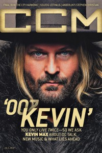

CMnexus
: Contemporary Christian culture, music, and media.
|
Kevin Max SmithOn the cover
1 July 2017
CCM Digital | Media coverage- 24 Jun 1991 in Christianity Today "Church In Action: Rhymin' and Rappin' D King", by Steve Rabey
- Nov 1994 in Syndicate "Kevin Smith", by Jamie Lee Rake
- Oct 1998 in CCM "A Father Found", by April Hefner
- May 2001 in CCM "Rebel With A Cause", by Melissa Riddle
- May 2001 in CCM "O Brothers, Where Art Thou?", by April Hefner, Gregory J. Rumburg, Melissa Riddle
- Nov 2001 in HM "Making A Break For The Walls Of Jericho", by Chris M. Short
- Jul 2002 in Christian Single "Featured Artist: Kevin Max Smith", by Lou Carlozo
- Aug 2002 in CCM "Get Real: A Conversation With Kevin Max", by Lizza Connor
- Sep 2002 in Christian Music Planet "21 Things You Always Wanted To Know About...: Kevin Max"
- May 2003 in CCM "3 Hours, 59 Minutes in the Life of Kevin Max", by Christina Farris
- Jun 2004 in CCM "Insider: Kevin Max's New L.A. Life", by Christina Farris
- Oct 2005 in CCM "Insider: Maximum Diversity", by David McCreary
- Dec 2005 in CCM "Insider: Go Tell It On The Mountain"
- Jul 2006 in CCM "Standing Room Only: The Imposter Tour", by Andy Argyrakis
- Jul 2006 in Christian Single "Featured Artist: Full Exposure", by Andy Argyrakis
- Jul 2007 in HM "Hardnews: Quick & Concise: Kevin Max Returns With Exploratory Project"
- May 2008 in HM "Using Blood as A Foundation", by Dan MacIntosh
- Apr 2010 in CCM Digital "'x' Things You Need to Know About...: Former dc Talk member Kevin Max", by Andy Argyrakis
- Nov 2012 in Relevant "The Drop: Kevin Max Makes A Big Move"
- 1 Jul 2015 in CCM Digital "Mini to the Max", by Layla Velasquez
- 15 Jan 2016 in CCM Digital "Jesus Freak at 20", by Justin Sarachik
- 1 Jul 2017 in CCM Digital "00-Kevin", by Kevin Sparkman
- Nov 2017 in Relevant "The Drop: Current: Kevin Max Makes A Big, Big Move"
Albums & reviews:1995: At the Foot of Heaven 2004: Between the Fence & the Universe
2008: Crashing Gates
2015: Starry Eyes Surprise
2019: Black Sheep of the Fold
2020: ADIO TEKNIKA (Echoes from The Weirding Module)
2020: Revisiting This Planet
Award Summary (Nominations / Wins)
Dove Awards2002 Dove Awards2003 Dove AwardsPublished articles1 article credited in CCM: 1994.Books about Kevin Max Smith |
|